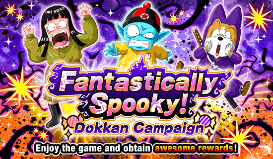
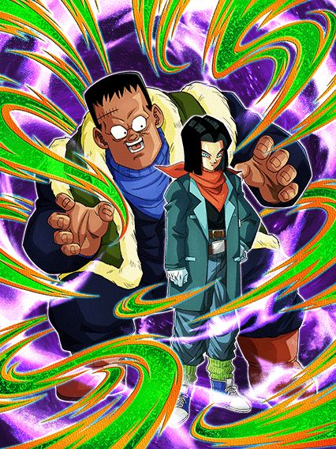
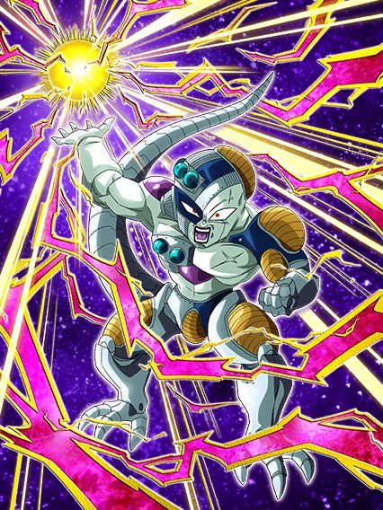
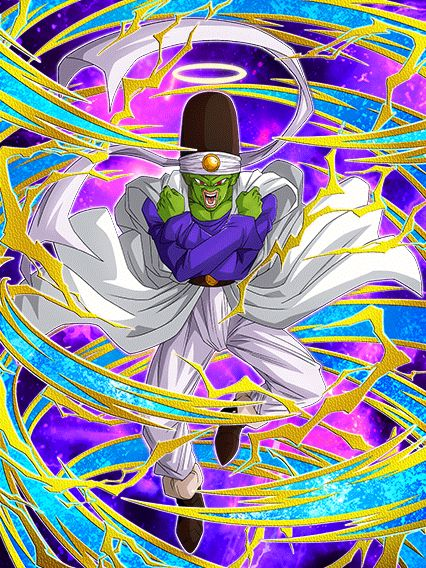

Mais um halloween.
Nada muito especial por aqui, só o fato de terem feito o banner especial de halloween com o retorno do Majin Vegeta INT.

Eu acho a ideia desse card muito maneira.
Infelizmente o EZA não mudou quase nada nesses caras, eles praticamente ficaram do mesmo jeito com só um leve aumento nos valores da passiva deles
Eles ainda tem defesa ativa por 8 turnos, e a redução de dano deles foi buffada pra 25%
Além disso eles agora lançam um adicional com 30% de chance de ser um Super Attack por 8 turnos depois de levarem um golpe
Em geral, é só isso
Queria que eles tivessem ganhado mais mas.. fazer oq né

O cara tem o kit quase inteiro disponível no modo fácil.
Esse Freeza por algum motivo tem várias "restrições" de Ki na passiva, ganhando 100% de ATK e DEF se tiver 6 de Ki, outros 100% se estiver com 9 de Ki, e mais 50% se estiver com 12
Pq o kit dele é assim? Não faço ideia, já que isso é estupidamente fácil de ter
Mas pelo menos tem a vantagem de ser fácil né
Ele ganha mais defesa se o time inteiro for Wicked Bloodline, e ganha 50% de chance de crítico se tiverem outros Resurrected Warriors no turno (isso é completamente impossível)
Enfim, EZA aceitável pra um F2P

É certamente um card.
Esse cara dá 20% de ATK e DEF pra todos aliados, e se todos forem Super Class, o suporte aumenta pra 30%
Essa é basicamente a única coisa que ele tem de interessante, pq em geral ele é só um card super genérico
Ele builda um pouquinho de ATK e DEF com 3 ataques mas em geral, ele só tá existindo mesmo
Não sou um grande fã desse card não.
Você chegou ao fim dessa página!
Obrigado por ler tudo, e fica a vontade pra ver outras